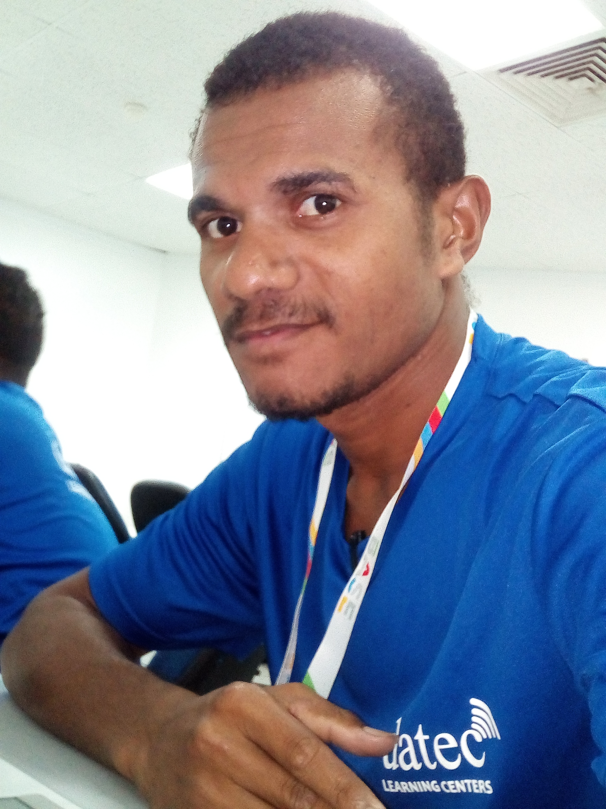
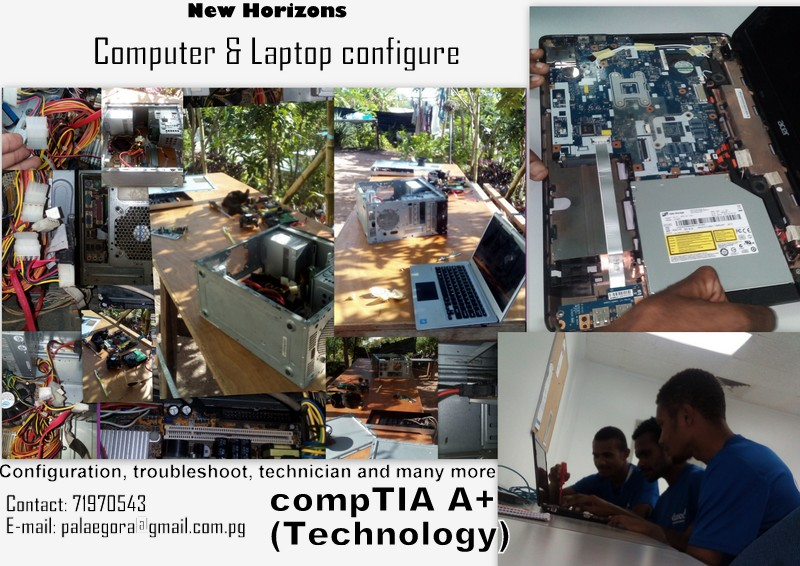
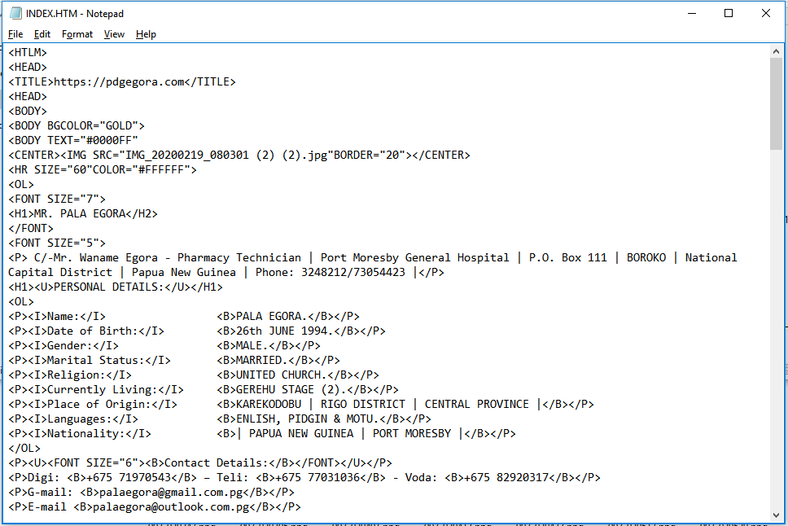

MR. PALA EGORA
C/-Mr. Waname Egora - Pharmacy Technician | Port Moresby General Hospital |
| P.O. Box 111 | BOROKO | National Capital District | Papua New Guinea | Phone: 3248212/73054423 |
PERSONAL DETAILS:
Name: PALA EGORADate of Birth: 26th JUNE 1994
Sex: MALE
Marital Status: MARRIED
Religion: UNITED CHURCH
Languages: ENGLISH, PIDGIN & MOTU
Currently Living: 5 MILE PORT MORESBY
Place of Origin: KAREKODOBU VILLAGE
Home Town: PORT MORESBY
Province: CENTRAL
District: RIGO
Nationality: PAPUA NEW GUINEA
- Digicel Network: +(675) 71970543
- Telikom Network: +(675) 77501775
- Voda Network: +(675) 82920317
- G-mail: palaegora@gmail.com.pg
- E-mail: palaegora123@outlook.com.pg
- https://pdgegora.github.io/Pala-Egora-website/
- https://pdgegora.github.io/Gomzy-s-Technology.com/
- https://pdgegora.github.io/Vanere/
Contact Details:
Mail address;
Websites;
Objectives and Skills
I am a highly motivated and enthusiastic person. I have the desire to learn and help in your company my strengths include
excellent communication as well as the ability to learn and work as an individual. I am honest, reliable and trust worthy.
CARRIER OBJECTIVES
SHORT TERM OBJECTIVES:
To serve on full time basis with a forward moving organization with a Solid performance and future projections.
As part of a team, I want to Add value and continue to grow with the organization. Be success in my chosen field,
I can achieve this by committed, self-discipline
and hard working.
LONG TERM OBJECTIIVES:
This depends on where the organization goes in the long run. I plan to work extra hard in order to move into position
of responsibility where I can lead a team of professions. Be innovative creative, and efficient in my personal carrier development.
EDUCATIONAL BACKGROUND

PRIMAY & SECONDARY:
| 2006 - 2014 | DAGONA PRIMARY | GRADE (8) CERTIFICATE |
|---|---|---|
| 2015 - 2016 | KWIKILA SECONDARY | GRADE (10) CERTIFICATE |
| 2017 - 2018 | KWIKILA SECONDARY | GRADE (12) CERTIFICATE |
TERTERY: SCHOLARSHIP;
Datec Learning Centers (DLC) Private Institute:
| Semester 1 | Semester 2 | Semester 3 | Semester 4 | Level 1 | Level 2 | Level 3 | Level 4 |
|---|---|---|---|
| Basic Hardware and Network | Networking + | MS Server 20212 | Networking Essentials |
| Programming in C | Server 2012installation & Configuration | Administration | Introduction to Networks |
| Programming C + + | Time management | MS Server 2012 ADS | Routing & Switching Essentials |
| HTML | Project | Team Building | Scaling Networks |
| Java | Project | Connecting netsorks | |
| Script | Customer Services | ||
| Communication Skills | Projec | ||
| Project |
[February – June 2019] The course I took was Advanced Professionals Diploma in Information Technology programming
(hardware &software). Obviously, I completed semester (1) and Level (1), I was not given any transcript or proof that I attended the
DLC (Private Institute), because I didn't afford absolute school fee. Due to financial problem and I was unable to complete the rest,
but I believe I can do better if given a chance. I had gained a lot of experiences in my past years at school, at home and at work places and that
actually boost my confidence to apply out to any IT departments for spaces.
JOB EXPERIENCES
©Rapid Fones Waterfront | Port Moresby |
Casual (Part-Time)[From: October 2018 – February 2019] Five (5) months experienced.
Customer Service: I worked as customer service. Assisting customers on brief explanation about the use of the phone and
setting up the system before the customer can enjoy the product.
RAPID FONES WATERFRONT (Kone).jpg:

©South Pacific Post: | Post Courier | Port Moresby |
Casual (IT Trainee) [From: November 2019 – April 2020] Six (6) months experienced.
IT Support: I help to troubleshoot PC, connect networks and connect PCs to the internet in same
domain network
(system architecture) through VMware workstation, and I create/archive emails, setup work station and many more.
My IT reference can tell who I am when I'm in the IT field. Professional IT Officer.
POST COURIER (Kone).jpg:

©W.R.Carpenter Estates (The Group of companies) National No.1 tea bags | Port Moresby |
Regular Staff [From: November 9th 2020 – September 29th 2023] Two (2) years and Nine (9) months experienced.
Packer: I operate tea machine at National No.1 tea bags factory for the last two years, and in April 23rd, 2023
I was shifted to Globe Warehouse to operate National No.1 (3in1) coffee machine. Specialist Operator. I'm very hard working and fast learner.
Actually, I know everything about warehouse and factory worker.
NATIONAL No.1 TEA BAG FACTORY (Yorkshire Estates 8 mile).jpg:

GLOBE WAREHOUSE (Yorkshire Estates 8 mile).jpg:

Personal Work at Home | IT Technician | Software&Hardware |
Enhancement - I update and, upgrade windows using Operating System (OS) through BIOS settings,
and I also configure (Troubleshoot) and Repair Laptop Computers and windows PCs. I have fair ideas about HTML- create Web page or can
eddit website (Website edditor), Java Script and many more.
K300.00 was my labour cost for any client brings his/her computer/devices for repair, configure and software installation. K5,000.00 for creating personel or company Website/ page etc. Click here: https://pdgegora.github.io/Gomzy-s-Technology.com/ for more information
HOME.TECH REPAIR.jpg
Home Tech: WEB_EDDIT (HTML).jpg: My website.
Other Personal Information:
Talking openly with different people and friendly, attending fellowship, playing sports, watching movies,
reading books and listening music.
Referees:
Waname Egora | Guidance | Pharmacy Technician | Port Moresby General Hospital |
Contact: +675 73054423/ +675 75961699
Email: wanameegoragomuna@123gmail.com.pgDohn Romero Ilavore | Retail Manager | Rapidfone waterfront |
Contact: +675 72738685Anthoo Roys | DLC Lecturer | CompTIA A + + | ICT Trainer and Team Leader |
Contact: +675 70351721/ 76005252
Email: aroys@datec.com.pgJomesh Joseph | DLC Lecture | Programming in C + + | ICT Trainer very professionals, with degree & masters |
Website: (linkedin)
Contact: +675 76373286
Email: JJOSEPH@DATEC.COM.PGKemuel Gimana | IT Manager | IT&T System Department | South Pacific Post |
Contact: +675 79994000
Email:kgimana@spp.com.pgHannah Nou | Production Manager | National No.1 Tea bags | Factory | Port Moresby |
Website: www.wrcpng.com
Contact: +675 7700 6166
Email: nn1pom@wrcpng.com.com.pg